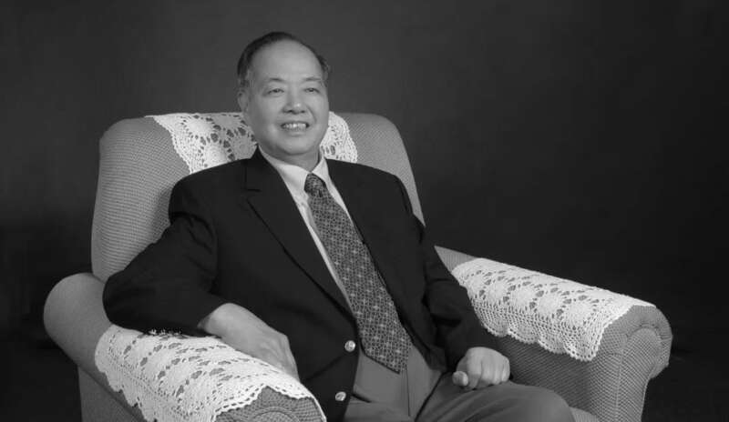
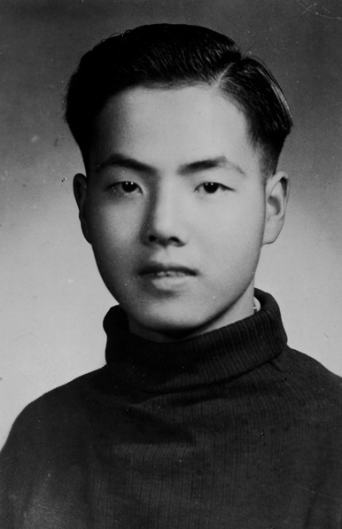
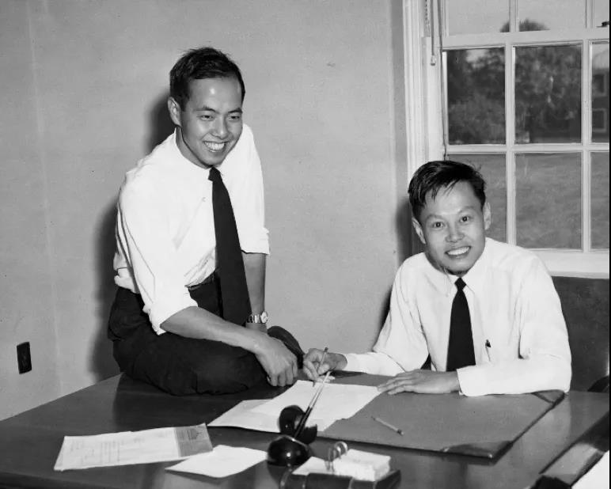
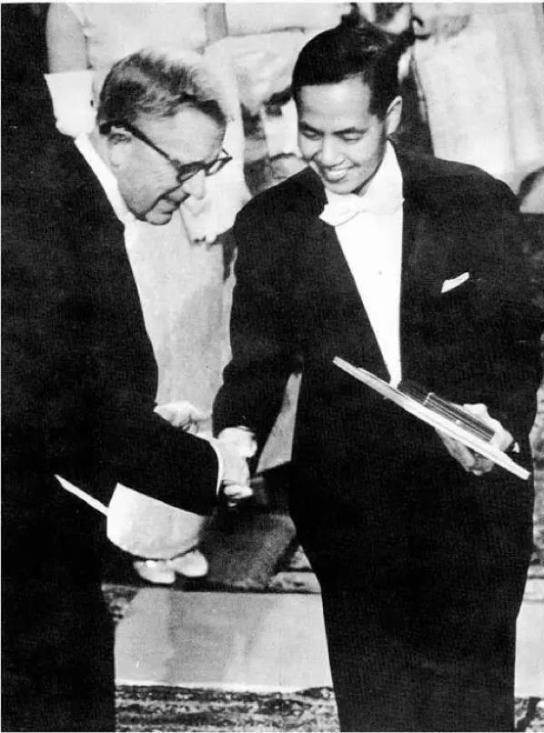
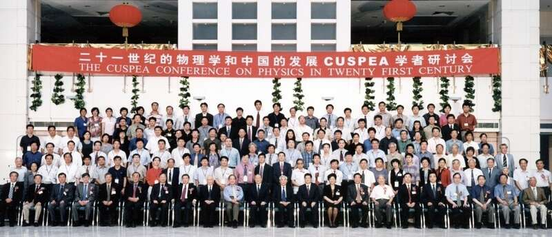
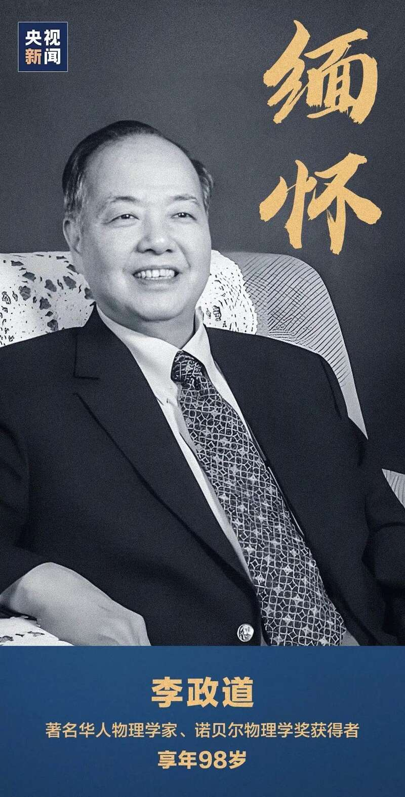

著名华人物理学家、诺贝尔物理学奖得主
李政道教授
于美国当地时间2024年8月4日凌晨2时33分
在美国旧金山家中去世
享年97周岁

小学到本科未取得正式文凭 唯一拥有的就是博士学位
1926年11月24日，李政道出生于上海。李政道在家排行老三，打小酷爱阅读，所读书目遍及自然科学和人文社科领域，常常沉浸书香便不知书外所踪。正是这份勤学善思，李政道演绎了从小学到本科均未取得正式文凭，唯一拥有的就是博士学位这一罕见传奇。

李政道16岁时通过自学，考上浙江大学，师从“中国雷达之父”束星北和“两弹一星元勋”王淦昌，两位老师的教导点亮了他耕耘物理科学的心灯。
由于战争动乱，李政道转学至西南联大物理系。在西南联大，中国物理学界富有名望的教授吴大猷，向李政道提供了最优质的物理学教育平台。
1946年，经吴大猷推荐，李政道以大三学生身份破格获得机会进入芝加哥大学，师从诺贝尔物理学奖获得者、物理学大师费米（E. Fermi）。在这里，李政道的学术研究不局限于某个特定的学科——量子场论、基本粒子理论、核物理、统计力学、流体力学、天体物理等多个方向均被覆盖。
四年后，李政道在芝加哥大学获得博士学位，之后在芝大天文系任助理研究员，从事流体力学的湍流、统计物理的相变以及凝聚态物理的极化子的研究。此后，李政道又先后到加利福尼亚大学伯克利分校和普林斯顿高等研究院从事科研工作。
首位华人诺贝尔奖得主
李政道长期沉浸于物理学的美妙世界中，自称物理是其生活方式。在李政道车载斗量的学术成果当中，宇称不守恒定律无疑是最为人们所熟知的一个。1957年，他与杨振宁一起，用这个定律摘下了物理学的王冠——诺贝尔物理学奖。

△李政道和杨振宁1957年在普林斯顿
1957年10月31日，瑞典皇家科学院宣布授予普林斯顿高等研究院数学学院杨振宁教授和哥伦比亚大学物理系李政道教授以当年诺贝尔物理学奖，颁奖理由是“因他们对（弱相互作用中）宇称不守恒定律的深刻研究以及由此导致有关基本粒子方面的许多重要发现”。
李政道和杨振宁自1956年10月1日正式发表论文《弱相互作用中的宇称守恒质疑》到以这一重大理论成果荣膺诺奖，历时仅13个月整，创下诺贝尔奖颁奖史上获奖最快的纪录，这一纪录至今仍未被打破。

△瑞典国王给李政道颁授诺奖
心系祖国科学教育事业和人才培养
自1972年起，李政道多次回国讲学、建言献策，改革开放以后更是不遗余力地推动中国科学教育事业进步，为中国科学教育战略布局、高能物理前沿探索、高水平人才培养和国际交流与合作做出了无可替代的贡献。

1979年至1989年，发起并参与组织实施中美联合培养物理类研究生计划（CUSPEA），选拔推荐915人赴美深造，造就了一批领军学者和社会栋梁，创设了我国急需高层次人才培养的新范式。
1985年，倡导建立博士后制度和成立中国博士后科学基金会，持续打造我国科技创新生力军数十万人。
1998年，发起设立秦惠䇹与李政道中国大学生见习进修基金，择优培育我国基础科学后备军数千人，成为我国创新型人才培养的重要载体。
倡导建立中美高能物理合作联合委员会机制和建设我国第一台高能加速器——北京正负电子对撞机（BEPC），促成北京谱仪（BES）、大亚湾中微子实验国际合作组，为我国在世界高能物理前沿取得一系列突破性成果提供了全局指导和倾力帮助。
倡导成立北京现代物理研究中心、中国高等科学技术中心、浙江近代物理中心、北京大学高能物理研究中心等，推进前沿科学研究，促进国际交流合作和青年学者成长，为构建开放型教学科研基地和育人聚才环境争取了政策支持。

缅怀 致敬！